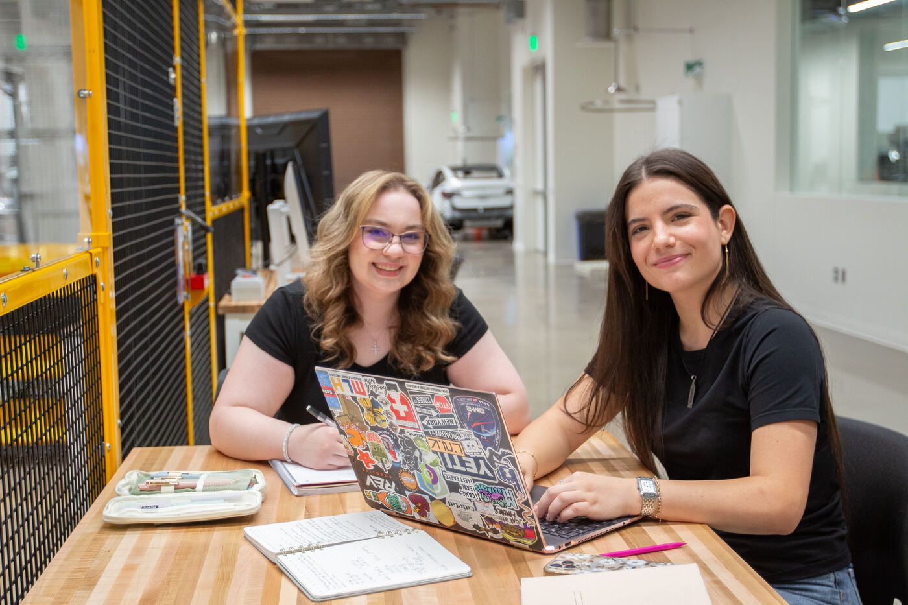

Learn
Courses and training
Graduate coursework in robotic systems and hands-on automation training for industry, taught in the lab.
School of Manufacturing Systems and Networks · Arizona State University
An instructional laboratory for robotics and automation in Room 231 of ISTB 12 on ASU's Polytechnic campus, supporting the Robotics and Autonomous Systems program with industrial robot arms, programmable logic controllers, and simulation-based instruction.
01 - About
The Robotics Systems Instructional Lab is a teaching laboratory in the School of Manufacturing Systems and Networks, part of the Ira A. Fulton Schools of Engineering at Arizona State University. It opened with ISTB 12 - the Interdisciplinary Science and Technology Building on the Polytechnic campus in Mesa, Arizona - in fall 2025.
The lab supports hands-on instruction in robotics and industrial automation: students program collaborative and industrial robot arms, work with programmable logic controllers (PLCs), and complete guided laboratories in physics-based simulation. Its courses serve the Robotics and Autonomous Systems degree programs.
02 - What the lab offers
The lab is a teaching space first: everything in it exists so students can learn robotics and manufacturing by doing.
Learn
Graduate coursework in robotic systems and hands-on automation training for industry, taught in the lab.
Build
Industrial and collaborative robot arms, PLC workbenches, 3D printing, CNC machining, and simulation workstations.
Guides
Complete, step-by-step laboratory guides - simulation, articulated robots, and industrial automation.
Research
Course projects and PhD research built on the lab's robots, PLCs, and simulation platforms.
03 - Facilities
Instruction in the lab centers on the same kinds of systems used in modern manufacturing and robotics work:
Industrial robots
Industrial robot arms of the kind widely used on production lines, including the FANUC ER-4iA.
Collaborative robots
A collaborative robot arm designed to work safely alongside people.
Collaborative robots
Lightweight collaborative arms used for pick-and-place and assembly exercises.
Desktop robots
Compact desktop robot arms used for introductory programming instruction.
Industrial automation
Programmable logic controllers - the industrial computers that run automated machinery.
Additive manufacturing
Building parts layer by layer - prototypes, fixtures, and structures that cannot be machined.
Subtractive manufacturing
Computer-controlled machining up to 5 axes, with robots tending the machine tools.
Simulation
Physics-based robot simulation used for the lab's guided instructional laboratories.
04 - Teaching
The lab's instruction is led by Prof. Sangram Redkar, Associate Professor in The Polytechnic School, whose work spans robotics, dynamics and control systems.

Teaching in the lab.
Course
Graduate coursework in robotic systems, with guided laboratories that move from simulation in NVIDIA Isaac Sim to real robot hardware.
More
The full picture: what is taught in the lab, industry training, and related RAS and manufacturing courses.
05 - Instructional labs
A guided laboratory series in physics-based robot simulation, written for RAS 545. Each lab is a complete, step-by-step guide with checkpoints and validation steps.
Lab 1
Open Isaac Sim, build a small scene with lights and objects, and run a first physics simulation.
Lab 2
Control a six-joint UR5e arm with OmniGraph, GUI inverse kinematics, and Python.
Lab 3
Give a simulated TurtleBot 3 sensors, localize it, and enable autonomous navigation with Nav2.
06 - Instructional labs
A hands-on series on the Dobot Magician Lite desktop arm, written for RAS 545. Students start with safe manual control and end at camera-guided sorting and robot kinematics.
Lab 1
Move the arm safely in X, Y and Z, record its coordinates, and program it to draw letters with Blockly.
Lab 2
Pick and place objects with suction-cup and gripper end effectors, programmed in Python.
Lab 3
Detect, classify and sort objects with a camera, then palletize them with the robot.
Lab 4
Work out the arm's forward and inverse kinematics and verify them on the real robot.
07 - Instructional labs
Six progressive laboratories covering industrial controllers, PLC programming, automated workcells, HMI and SCADA development, collaborative robots, and smart-factory integration.
Lab 1
Build the workcell foundation: safe 24 VDC power, an E-stop input, an isolated Ethernet network, and a first Modbus TCP exchange with a Micro850 PLC.
Guide in preparation - check back soon.
Lab 2
Develop, test, and troubleshoot PLC programs using Ladder Logic, Structured Text, timers, counters, interlocks, and reusable routines.
Guide in preparation - check back soon.
Lab 3
Integrate a conveyor, industrial sensors, and pneumatic actuators into an interlocked automatic material-handling sequence.
Guide in preparation - check back soon.
Lab 4
Build an operator interface for commanding, monitoring, alarming, and trending an automated workcell using Ignition and PLC data.
Guide in preparation - check back soon.
Lab 5
Integrate a FANUC or Universal Robots platform with a PLC, exchange commands and status, and validate an interlocked workcell sequence.
Guide in preparation - check back soon.
Lab 6
Connect the automated workcell to a smart-manufacturing data layer using MQTT, dashboards, production metrics, and a digital twin of system state.
Guide in preparation - check back soon.
08 - Visit
Room 231, ISTB 12 (Interdisciplinary Science and Technology Building 12)
Arizona State University, Polytechnic campus
Mesa, Arizona